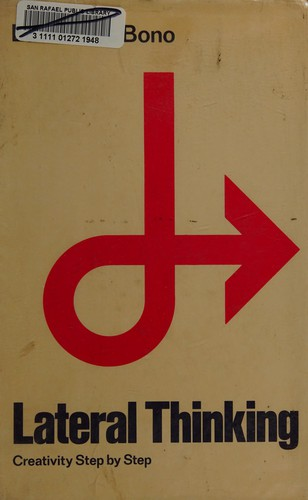
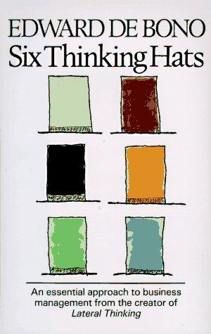

Módulo 02 / Apartado 1 de 5
De Bono y el pensamiento lateral
La primera de las tres escuelas. Y la que Recuenco defiende sabiendo perfectamente lo que le van a decir.
Quién era este señor
Edward de Bono era maltés, médico de formación, y se pasó cincuenta años sosteniendo que pensar es una destreza que se entrena y no un don que te toca. Murió en 2021 con unos sesenta libros publicados y una industria de cursos y certificaciones montada alrededor.
En 1967 acuñó el término por el que se le conoce: lateral thinking, pensamiento lateral. La expresión se le escapó de las manos y hoy la usa gente que no ha leído una línea suya, casi siempre para decir «tener una ocurrencia».
La idea, que es mejor de lo que su fama sugiere
Su punto de partida es una observación sobre cómo funciona la cabeza: el cerebro construye patrones y luego los reutiliza, porque le sale barato. Eso es una ventaja brutal para casi todo, y una trampa cuando el problema es nuevo.
Vertical es el que te enseñaron: partes de donde estás, das un paso correcto, luego otro, y cada paso tiene que justificarse. Es como cavar el mismo hoyo más hondo. Sirve cuando estás cavando en el sitio correcto.
Lateral consiste en ponerte a cavar otro hoyo en otro lado, aunque no sepas justificar por qué. Los pasos intermedios pueden ser absurdos, y de Bono insiste en que eso está bien, porque lo que juzgas es el sitio al que llegas, no el camino.
Lo dijo él mismo con una frase que se le recuerda: no puedes cavar un hoyo en otro sitio cavando el mismo hoyo más profundo.
Las técnicas, en concreto
Esta es la parte que la gente se salta, y es la que separa el método de la anécdota. No son consejos, son procedimientos que se ejecutan aunque no te apetezca.
Coges una palabra sin ninguna relación con tu problema, de un diccionario o de lo primero que veas, y te obligas a conectarla. La lógica de fondo es que el azar te mete en un patrón mental distinto, y desde ahí el problema se ve de otra manera.
Lanzar una afirmación deliberadamente falsa o imposible y avanzar desde ella sin juzgarla. «Los coches tienen ruedas cuadradas.» No es una propuesta: es un trampolín para salir del surco. De Bono le puso hasta una etiqueta, po, para marcar que lo que viene detrás no hay que evaluarlo todavía.
Dar la vuelta al enunciado. Si el problema es cómo atraer clientes, trabajas cómo espantarlos. Es la misma operación que en el módulo 1 aparecía atribuida a Munger y que en el apartado siguiente vas a ver en Nardone, con otro nombre.
Coger el supuesto que todo el mundo da por hecho y quitarlo a ver qué pasa. El telesilla del módulo 1 es exactamente esto: nadie había quitado el supuesto de que el motivo para subir tenía que estar relacionado con esquiar.
Los seis sombreros
Su segundo gran éxito, de 1985, y lo más aprovechable que dejó. Parte de un diagnóstico sobre por qué las reuniones no producen: todo el mundo hace todo a la vez. Uno propone mientras otro ya busca el fallo, y un tercero defiende la idea anterior porque la dijo él. La discusión deja de ir del problema y pasa a ir de las posiciones.
Su propuesta es el pensamiento paralelo: en cada momento, todos los presentes piensan en la misma modalidad. Cuando toca buscar riesgos, todos buscan riesgos, incluido el que propuso la idea.
El sombrero rojo merece atención aparte porque es el más raro y el más útil. Autoriza a decir «esto me da mala espina» sin tener que justificarlo. En una organización que exige razones para todo, la intuición se disfraza de argumento falso, y entonces se discute el argumento falso en lugar de la corazonada real. Darle un turno propio saca a la superficie información que si no se pierde.
Y ahora la parte incómoda
Hay que decirlo, porque el temario oficial lo pone en el panteón y tú te vas a cruzar con las críticas en cuanto busques.
La base empírica de que el pensamiento lateral mejore los resultados es escasa. La justificación neurológica que de Bono usaba no se sostiene con lo que hoy se sabe del cerebro. Y alrededor de todo esto hay un negocio grande de licencias, formadores certificados y material oficial, que es exactamente el tipo de cosa que en el módulo 1 aprendimos a mirar con lupa.
Lo interesante es que Recuenco lo sabe y lo mantiene igualmente. En una turra cuenta que alguien de la comunidad le preguntó por qué tiene a de Bono en el panteón siendo un cantamañanas. Su respuesta, en corto: que lo es. Y que aun así está ahí porque fue el primero que consiguió meter la creatividad en el inconsciente colectivo como algo que se puede trabajar.
Que lo es. Porque es el primero que logró darle a la creatividad un lugar predominante en el inconsciente colectivo.
Cómo usarlo sin hacer el ridículo
Lo que aguanta una defensa: los seis sombreros como protocolo de reunión. Funciona por razones sociales, ordena el turno de palabra y evita que el más senior fije el marco en los primeros dos minutos. Eso se puede defender ante cualquiera.
Lo que no aguanta: presentarlo como un método de pensamiento con respaldo científico. Si lo haces, te lo tumban, y con razón.
Y si trabajas el caso tú solo, el uso honesto es forzarte a recorrer los seis turnos por escrito antes de cerrar una recomendación. Sobre todo el rojo y el negro, que son justamente los que uno se salta cuando ya sabe lo que quiere concluir.
Fuentes de este apartado
Las turras de las que sale
El hilo donde ordena su postura sobre la creatividad metodologizada. Sale la liminalidad, la orquestación como función estratégica, y el artículo sobre el fin del Design Thinking tal como lo conocíamos. Es el marco donde encaja de Bono.
El cuerpo calloso y el test AstudilloTurra · 45 tweetsVa de por qué hay que trabajar con los dos hemisferios y de la manía del capital riesgo con los negocios de factor humano. Aquí, en una posdata, está la respuesta sobre por qué mantiene a de Bono en el panteón sabiendo lo que es.
Soluciones de mierda a problemas complejosTurra · 43 tweetsLa turra que coloca a de Bono, Nardone y Rumelt en un eje. Empieza cabreado con el nudo gordiano, precisamente porque se cita como pensamiento lateral cuando fue un espadazo que podía dar cualquiera.
Los libros

El pensamiento lateralEdward de Bono · 1967El libro donde acuña el término y explica las técnicas: entrada al azar, provocación, inversión y cuestionamiento de supuestos. Es más práctico y menos místico de lo que su fama sugiere. Envejecido en los ejemplos, vigente en el procedimiento.

Seis sombreros para pensarEdward de Bono · 1985Corto y directo. Es un protocolo de reunión, no un tratado, y por eso funciona: se puede aplicar el lunes sin formación previa. La parte más aprovechable de toda su obra para el trabajo en equipo del módulo 6.